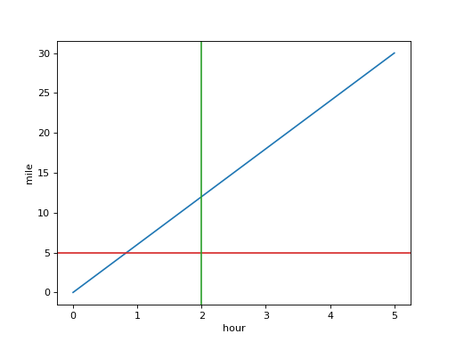
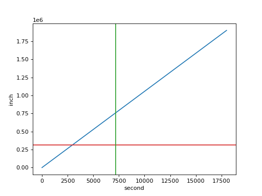

Plotting with Matplotlib¶
Matplotlib is a Python plotting library that produces a wide range of plot types with publication-quality images and support for typesetting mathematical formulas. Starting with Matplotlib 2.0, Quantity instances can be used with matplotlib’s support for units when plotting. To do so, the support must be manually enabled on a UnitRegistry:
>>> import pint
>>> ureg = pint.UnitRegistry()
>>> ureg.setup_matplotlib()
This support can also be disabled with:
>>> ureg.setup_matplotlib(False)
This allows plotting quantities with different units:
import matplotlib.pyplot as plt
import numpy as np
import pint
ureg = pint.UnitRegistry()
ureg.setup_matplotlib(True)
y = np.linspace(0, 30) * ureg.miles
x = np.linspace(0, 5) * ureg.hours
fig, ax = plt.subplots()
ax.plot(x, y, 'tab:blue')
ax.axhline(26400 * ureg.feet, color='tab:red')
ax.axvline(120 * ureg.minutes, color='tab:green')
(Source code, png, hires.png, pdf)



This also allows controlling the actual plotting units for the x and y axes:
import matplotlib.pyplot as plt
import numpy as np
import pint
ureg = pint.UnitRegistry()
ureg.setup_matplotlib(True)
y = np.linspace(0, 30) * ureg.miles
x = np.linspace(0, 5) * ureg.hours
fig, ax = plt.subplots()
ax.yaxis.set_units(ureg.inches)
ax.xaxis.set_units(ureg.seconds)
ax.plot(x, y, 'tab:blue')
ax.axhline(26400 * ureg.feet, color='tab:red')
ax.axvline(120 * ureg.minutes, color='tab:green')
(Source code, png, hires.png, pdf)



For more information, visit the Matplotlib home page.